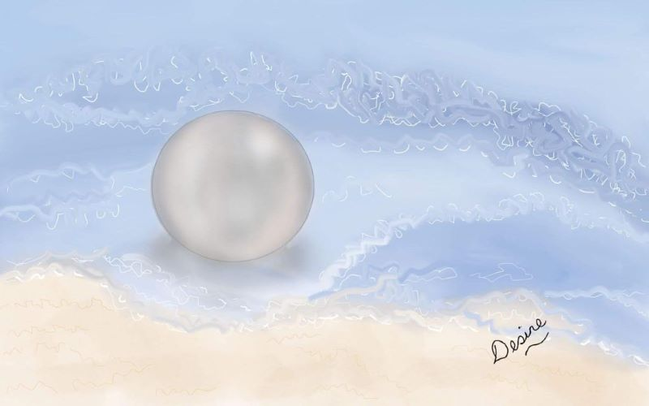

Scriptures Journalign
Scripture Journalign always fills your day with joy personal revelation creativity hope
How I started to do Scripture Journalign?
While in the middle of the pandemic time, a friend sended me an old Galaxy Tab S 4 with an stylus, then my husband added this is for you, and theres a place to draw, I know you will find something usefull to do,after that I started to think and I just decided to ilustrate the Scriptures and quotes from the prophets. By that time I was a Relief Society Secretary, so I started to learn how to digital drawing with a program that allows to make drawings with tools similar to when you use a fisical brush and later I learned how to edit using Canvas, and drop by drop I turned that old tablet into my favorite place because I found a way to learn and to help the sisters by creating meaninful messages t help hem to found hope in the middle of our unusual situation. At first, my drawings were like the ones making by a kid , but drop by drop I improve and everybody like my ilustrations. Last year, I receive as a gift a scriptures journal edition and I started to ilustrate my Scriptures along with "Come Follow me", and now I am creating this site to share my love for the Scriptures and to keep my ilustrations in one site.
Positive things about doing Scripture Journalign
Doing Scriptures Journalign will keep away the sadness. Will enhance yor creativity. Could help you to be near to God. Drawing about the Scriptures could help to reduces stress You will start to leving a legacy of faith to your family and friends. Could help to boost your self steem. Will help your memory. Could led you to find new friends and to preach the Gospel. Help to keep a tracking record of your faith.
Your Favorite Scripture ilustration Request